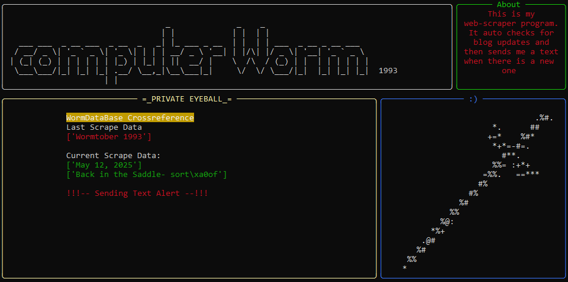
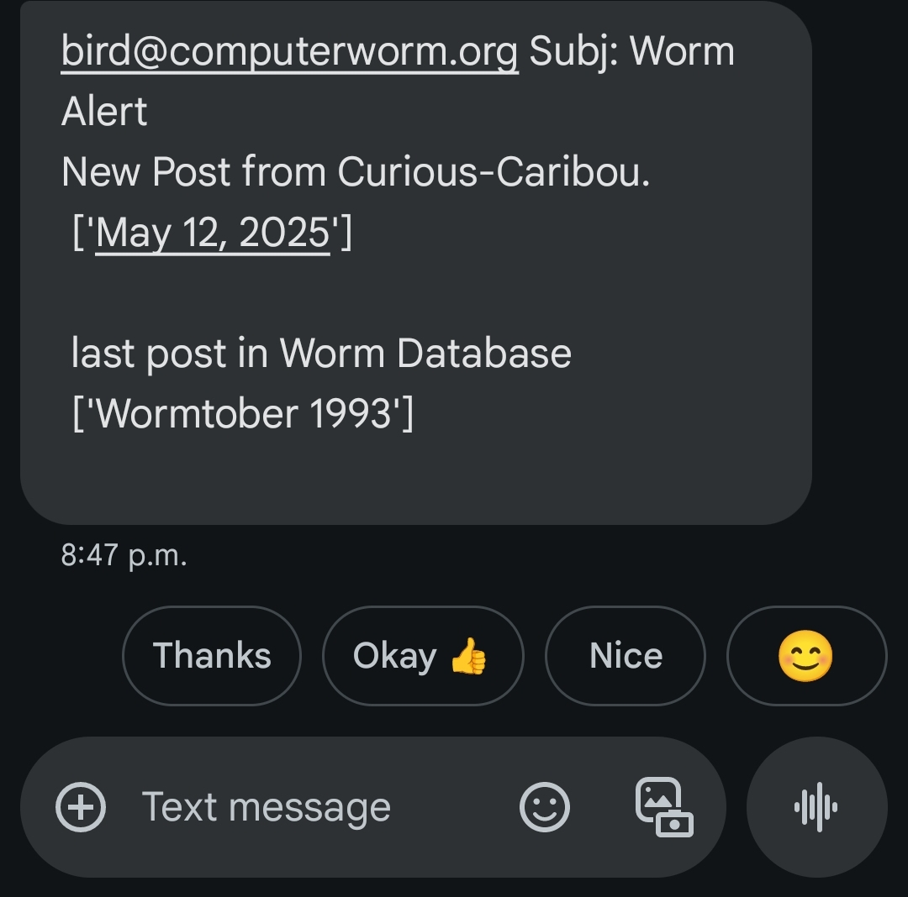
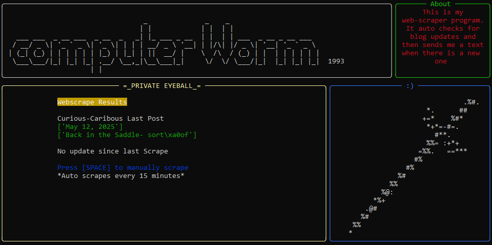
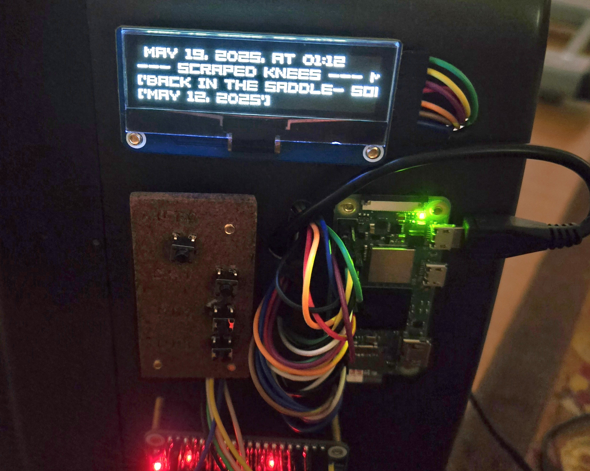

Scraped Knees
May 14, 2025
Auto webscraper
This is a webscraping program I built that scrapes my friends blog to see when the last post was. I also scrape the title of the latest post. Next my program opens a .txt file I use as a sort of database and cross references the date of the blog post, with the date recorded in the text file. If they are different dates, the program will send me a text to notify me that there is new content on the blog to check out. How freaking cool is this.

Heres how the text message looks

*I manually edited the database file to be different to test it, thats why it says wormtober. And since wormtober != May 12, the program sent the text :)
If however the scraped data matches my database text file, then it will simply print this text to the screen and not text me. It auto scrapes every 15 minutes
but if you want to quickly check you can hit space. Also I have absolutely no clue why the blog post title comes out with those extra symbols in it lol [\xa0o]  The idea is to stick this code into my vivarium project I'm working on, since the vivarium controller will be running contiously it might as well do a quick webscrape every few minute as well. I'l probably add a few more websites to scrape data
from as well but I can't think of anything I care enough about to receive text updates for lol. Could scrape anything really. Get a text when a stock price falls below a certain value? idk Anyways the process of sending the text is really cool, it uses the koodo/telus SMS Gateway to send it from my email. Here is how it works if you'd like to try it yourself Obviously my server isn't gmail since I'm using my own domains email [computerowrm.org] but this is what youd put if you used a gmail address. And as for the recipient I blanked out my phone # so put your own there and replace the phone carrier
gateway at the end [@msg.telus.com] with whoever you are with according to this link This was a fun project, I've had a blast learning the "Rich" python library to make these sort of terminal UI's, and the webscraping was done using the "Beautiful Soup" library. I've also been playing with
Selenium webdriving firefoxs "geckodriver" but I don't use that here. Selenium and Soup both have pretty similar applications but with Soup you don't actually visit the webpage to scrape the data you parse the html source code.
Selenium is cool too though you can actually control the webpage, which is what I'm doing to rebuild/upgrade my Drinking Water Autoreporter May 19, 2025 Update: I got my scraper program tucked into the code of my milipede vivarium since it's going to be continously running anyways. Works like a charm. I also have to figure out a good setpoint for the vivarium to text me at,
for example an alert for if the humidity drops below x% or temp is too hot or cold. idk. It's a bit overkill to be honest but wont be hard to program in 